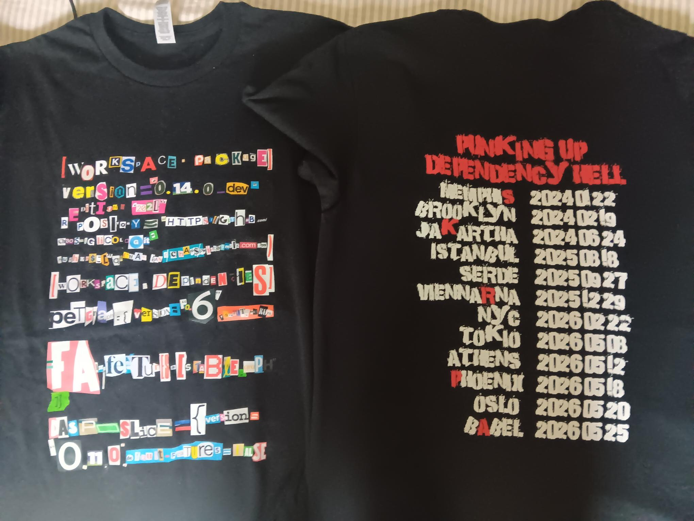

FSE Opening Keynote's t-shirt
Earlier this year, I was invited to give the opening keynote at the International Conference on the Foundations of Software Engineering (FSE). A unique opportunity to prepare a talk for a broad, expert software engineering audience, and to design a tailor-made t-shirt, as the perfect prop for the talk.
"Punkin'up Dependency Hell" is about how dependency hell has grown into a wide and rich software supply chain composed of tools, libraries, pipelines and millions of lines third-party code, usually open source. Punk in this context refers to the hardly-tamed benefits and wicked caveats that come with this supply chain. Punk also sets the aesthetics for the t-shirt.
The front design reproduces a mundane dependency declaration file with a punk visual aesthetic. This type of file is the seed for a large part of the software supply chain. Reproducing a dependency file by hand, one colorful character after the other, is a tribute to the role third-party packages have taken in popular development culture. We reproduce the real-world dependency file, Cargo.toml of the glicol live coding environment. This choice is motivated by the compact format of toml, and because we love how live coding blends code, art and performance!
With a clear spec, reproduce glicol's cargo.toml with punk visual aesthetics, we just had to do it. For a few weeks, the research krew collected the hardware: paper-made magazines, analog newspapers, supermarket coupons and discounts leaflets, all sorts of unusual sources of diverse textures, colors and fonts. A few weeks before FSE, we gathered with all this material, tape, glue, scisors, snacks to implement the spec. For one afternoon, we manipulated pure tangible material, looking for characters, one after the other, patiently, with no ctrl-F. Little by little, we assembled 12 lines of the dependency file, on an A3 black page. Further scanned, it made the front graphics for the t-shirt.
A proper punk t-shirt also needs graphics in the back. It is a fake tour schedule for the imaginary dependency punk band. The tour goes through cities and countries, at specific dates. All place names are names of real software packages that are named after places. The dates are the dates of the latest release of each package as of June 10, 2026. The schedule is available here
{kind=link}
References
- Original front punk dependency design
- Original back punk dependency tour design
- Slides for the FSE keynote
- Bibliography for the FSE keynote
- Supplemental material for the FSE keynote
- glicol
{kind=link}
